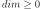
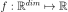
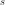
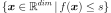
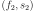
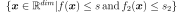
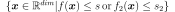

LevelSet¶
- class LevelSet(*args)¶
Level set.
- Available constructors:
LevelSet(dim=1)
LevelSet(function=ot.SymbolicFunction([‘x’], [‘1.0’]), operator=ot.LessOrEqual(), level=0.0)
- Parameters
- dimint, 
Dimension of the LevelSet.
- function
Function A function such that:  defining the LevelSet.
- operator
ComparisonOperator Comparison operator against the level.
- levelfloat
Level  defining the LevelSet.
Notes
A LevelSet is a
Domaindefined as follows:
Examples
>>> import openturns as ot >>> function = ot.SymbolicFunction(['x1', 'x2'], ['x1^4 + x2^4']) >>> s = 1.0 >>> op = ot.LessOrEqual() >>> levelSet = ot.LevelSet(function, op, s)
Methods
computeDistance(*args)Compute the Euclidean distance of a given point to the domain.
contains(*args)Check if the given point is inside of the domain.
Accessor to the object's name.
Get the dimension of the domain.
Get the function defining the level set.
getId()Accessor to the object's id.
getLevel()Get the level defining the level set.
Get the lower bound of the bounding box.
getName()Accessor to the object's name.
Operator accessor.
Accessor to the object's shadowed id.
Get the upper bound of the bounding box.
Accessor to the object's visibility state.
hasName()Test if the object is named.
Test if the object has a distinguishable name.
intersect(other)Return the levelSet equals to the intersection between the LevelSet and another one.
join(other)Return the levelSet equals to the union between the LevelSet and another one.
setFunction(function)Set the function defining the level set.
setLevel(level)Set the level defining the level set.
setLowerBound(bound)Set the lower bound of the bounding box.
setName(name)Accessor to the object's name.
setOperator(op)Operator accessor.
setShadowedId(id)Accessor to the object's shadowed id.
setUpperBound(bound)Set the upper bound of the bounding box.
setVisibility(visible)Accessor to the object's visibility state.
- __init__(*args)¶
- computeDistance(*args)¶
Compute the Euclidean distance of a given point to the domain.
- Parameters
- point or samplesequence of float or 2-d sequence of float
Point or Sample with the same dimension as the current domain’s dimension.
- Returns
- distancefloat or Sample
Euclidean distance of the point to the domain.
- contains(*args)¶
Check if the given point is inside of the domain.
- Parameters
- point or samplesequence of float or 2-d sequence of float
Point or Sample with the same dimension as the current domain’s dimension.
- Returns
- isInsidebool or sequence of bool
Flag telling whether the given point is inside of the domain.
- getClassName()¶
Accessor to the object’s name.
- Returns
- class_namestr
The object class name (object.__class__.__name__).
- getDimension()¶
Get the dimension of the domain.
- Returns
- dimint
Dimension of the domain.
- getFunction()¶
Get the function defining the level set.
- Returns
- function
Function A function such that: defining the LevelSet.
- function
Examples
>>> import openturns as ot >>> function = ot.SymbolicFunction(['x'], ['3*x-1']) >>> levelSet = ot.LevelSet(function, ot.LessOrEqual(), 0.0) >>> print(levelSet.getFunction().getEvaluation()) [x]->[3*x-1]
- getId()¶
Accessor to the object’s id.
- Returns
- idint
Internal unique identifier.
- getLevel()¶
Get the level defining the level set.
- Returns
- levelfloat
Level defining the LevelSet.
Examples
>>> import openturns as ot >>> function = ot.SymbolicFunction(['x'], ['3*x-1']) >>> levelSet = ot.LevelSet(function, ot.LessOrEqual(), 0.0) >>> print(levelSet.getLevel()) 0.0
- getLowerBound()¶
Get the lower bound of the bounding box.
- Returns
- bound
Point Lower bound of the bounding box of the level set. It allows one to clip the level set.
- bound
- getName()¶
Accessor to the object’s name.
- Returns
- namestr
The name of the object.
- getOperator()¶
Operator accessor.
- Returns
- op
ComparisonOperator Comparison operator against the level.
- op
- getShadowedId()¶
Accessor to the object’s shadowed id.
- Returns
- idint
Internal unique identifier.
- getUpperBound()¶
Get the upper bound of the bounding box.
- Returns
- bound
Point Upper bound of the bounding box of the level set. It allows one to clip the level set.
- bound
- getVisibility()¶
Accessor to the object’s visibility state.
- Returns
- visiblebool
Visibility flag.
- hasName()¶
Test if the object is named.
- Returns
- hasNamebool
True if the name is not empty.
- hasVisibleName()¶
Test if the object has a distinguishable name.
- Returns
- hasVisibleNamebool
True if the name is not empty and not the default one.
- intersect(other)¶
Return the levelSet equals to the intersection between the LevelSet and another one.
- Parameters
- otherLevelSet :
A LevelSet defined by .
- Returns
- levelSet
LevelSet levelSet equals to the intersection between the LevelSet and otherLevelSet i.e. levelSet is defined by: .
- levelSet
Examples
>>> import openturns as ot >>> # First level set >>> function = ot.SymbolicFunction(['x'], ['3*x-1']) >>> levelSet1 = ot.LevelSet(function, ot.LessOrEqual(), 0.5) >>> # Second level set >>> function = ot.SymbolicFunction(['x'], ['x']) >>> levelSet2 = ot.LevelSet(function, ot.LessOrEqual(), 0.5) >>> # Intersection between levelSet1 and levelSet2 >>> intersection = levelSet1.intersect(levelSet2) >>> # Tests >>> print([1.0] in intersection) False >>> print([0.25] in intersection) True
- join(other)¶
Return the levelSet equals to the union between the LevelSet and another one.
- Parameters
- otherLevelSet :
A LevelSet defined by .
- Returns
- levelSet
LevelSet levelSet equals to the union between the LevelSet and otherLevelSet i.e. levelSet is defined by: .
- levelSet
Examples
>>> import openturns as ot >>> # First level set >>> function = ot.SymbolicFunction(['x'], ['3*x-1']) >>> levelSet1 = ot.LevelSet(function, ot.LessOrEqual(), 0.0) >>> # Second level set >>> function = ot.SymbolicFunction(['x'], ['x']) >>> levelSet2 = ot.LevelSet(function, ot.LessOrEqual(), 0.0) >>> # Union between levelSet1 and levelSet2 >>> join = levelSet1.join(levelSet2) >>> # Tests >>> print([0.5] in join) False >>> print([0.25] in join) True
- setFunction(function)¶
Set the function defining the level set.
- Parameters
- function
Function A function such that: defining the LevelSet.
- function
Examples
>>> import openturns as ot >>> levelSet = ot.LevelSet() >>> function = ot.SymbolicFunction(['x'], ['3*x-1']) >>> levelSet.setFunction(function)
- setLevel(level)¶
Set the level defining the level set.
- Parameters
- levelfloat
Level defining the LevelSet.
Examples
>>> import openturns as ot >>> levelSet = ot.LevelSet() >>> levelSet.setLevel(3.0)
- setLowerBound(bound)¶
Set the lower bound of the bounding box.
- Parameters
- boundsequence of floats
Lower bound of the bounding box of the level set. It allows one to clip the level set.
- setName(name)¶
Accessor to the object’s name.
- Parameters
- namestr
The name of the object.
- setOperator(op)¶
Operator accessor.
- Parameters
- op
ComparisonOperator Comparison operator against the level.
- op
- setShadowedId(id)¶
Accessor to the object’s shadowed id.
- Parameters
- idint
Internal unique identifier.
- setUpperBound(bound)¶
Set the upper bound of the bounding box.
- Parameters
- boundsequence of floats
Upper bound of the bounding box of the level set. It allows one to clip the level set.
- setVisibility(visible)¶
Accessor to the object’s visibility state.
- Parameters
- visiblebool
Visibility flag.